1 1
Kai Du, Bin Gao, Yazhong Wang, Xianghan Xu, Jaewook Kim, Rongwei Hu, Fei-Ting Huang
and Sang-Wook Cheong*
Dr. K. Du, Dr. B. Gao, Y. Wang, X. Xu, Dr. J. W. Kim, Dr. R. Hu, Dr. F. Huang and Prof. S.-
W. Cheong*
Rutgers Center for Emergent Materials and Department of Physics and Astronomy,
Rutgers University, Piscataway, New Jersey 08854, USA
* To whom the correspondence should be addressed. (E-mail: sangc@physics.rutgers.edu)
. Here, we report the first
0.6
Sc
0.4
FeO
(
h
-LSFO)
1 μm in s
ize. On the other hand, the loop WFM domains
are ~100 μm in size,
h
-LSFO. The domain decoupling can be
Title
Vortex Ferroelectric Domains, Large-loop Weak Ferromagnetic
Domains, and Their Decoupling in Hexagonal (Lu, Sc)FeO
Abstract
The direct domain coupling of spontaneous ferroelectric polarization and net magnetic
moment can result in giant magnetoelectric (ME) coupling, which is essential to achieve
mutual control and practical applications of multiferroics. Recently, the possible bulk
domain coupling, the mutual control of ferroelectricity (FE) and weak ferromagnetism
(WFM) have been theoretically predicted in hexagonal LuFeO
successful growth of highly-cleavable Sc-stabilized hexagonal Lu
single crystals, as well as the first visualization of their intrinsic cloverleaf pattern of
vortex FE domains and large-loop WFM domains. The vortex FE domains are on the
order of 0.1-
and there exists no interlocking of FE and WFM domain walls. These strongly manifest
the decoupling between FE and WFM in
explained as the consequence of the structure-mediated coupling between polarization
and dominant in-plane antiferromagnetic spins according to the theoretical prediction,
which reveals intriguing interplays between FE, WFM, and antiferromagnetic orders in
h
-LSFO. Our results also indicate that the magnetic topological charge tends to be
identical to the structural topological charge. This could provide new insights into the
2 2
Multiferroics, Magnetoelectric coupling, Hexagonal ferrites, Weak ferromagnetism, Improper
ferroelectricity
Multiferroic materials, in which two or multiple ferroic orders coexist, have drawn a great
deal of attentions due to their fundamental importance and potentials for the next generation
devices
–
. However, in most multiferroics, the magnetoelectric (ME) coupling strength is
quite weak, especially in linear-ME materials
,
which limits their practical applications.
Therefore, multiferroics with the direct domain coupling between spontaneous magnetization
(
) and polarization (
P
) are highly sought after. The direct domain coupling can result in
giant ME coupling, enabling the mutual control in the sense that flipping one of
M
or
P
can
induce the flipping of the other. This direct domain coupling effect has been partially
achieved, for example, at the hetero-interfaces of bilayer films.
M
in one film layer can be
flipped by flipping
P
in the other film layer by electrical fields, however not the other way
around
. The similar situation has also been discovered in single-phase Dy
0.7
Tb
0.3
FeO
and
Dy
0.75
Gd
0.25
FeO
where only the flipping of
M
by electrical fields is reported
. Other
examples in single-phase bulk systems are very limited. CoCr
O
7,8
and Mn
GeO
appear to
be the only two single-phase materials that contain spontaneous
M
and magnetism-induced
P
,
which can be flipped by the magnetic field. However, their
P
magnitude is tiny for any
applications, and flipping
P
(thus,
M
) with electrical fields cannot be achieved due to the
small magnitude of
P
. Recently, a theoretical study suggests that the single-phase hexagonal
LuFeO
(
h
-LuFeO
) system may have the potential to realize this ideal effect with the direct
induction of direct coupling between magnetism and ferroelectricity mediated by
structural distortions, which will be useful for the future applications of multiferroics.
Keywords:
Introduction
M
3 3
domain coupling between its ferroelectricity (FE) and weak ferromagnetism (WFM)
. Thus,
it is of great importance to study experimentally the possibility of a direct domain coupling
effect in
h
-LuFeO
, which is energy efficient and highly desirable for future applications.
Meanwhile, the recent ME coupling study on
h
-LuFeO
/LuFe
O
superlattices
demonstrates
the capability of electrical field control of magnetism near the room temperature, which
indicates
h
-LuFeO
and its related compounds are promising for future applications. However,
with little knowledge of the intrinsic ME coupling of
h
-LuFeO
itself, a full understanding of
the ME coupling in superlattices and other related materials is unrealistic.
For the possible giant ME coupling,
h
-LuFeO
systems in the P6
cm polar structure (
Figure
) has attracted a significant research attentions, since this metastable hexagonal phase of its
orthorhombic bulk form was reported to be stabilized in thin film form by epitaxial strain
12,13
or in bulk by Sc or Mn doping
–
. Samples in both forms are believed to show similar
physical properties despite different approaches used for the synthesis (see Supplementary
Information, note 1 for details). They exhibit robust ferroelectricity well above room
temperature, similar to the well-studied multiferroic hexagonal RMnO
(
h
-RMnO
, R=rare
earth)
17,18
.
Their improper ferroelectricity due to the structural instability is associated with
the structural trimerization. The trimerization drives the FE transition from the non-polar
P6
/mmc to the polar P6
cm structure and results in a two-up/one-down (or two-down/one-up)
displacement of R-site ions, which, in turn, leads to ferroelectric polarization along the
c
axis.
Note that alternating FE domains are clamped to the six structural vortex domains around one
topological defect, forming an intriguing cloverleaf pattern in
h
-RMnO
(ref. 19). Although
magnetic domains in
h
-RMnO
can be coupled with FE domains
20,21
, there exists no bulk
spontaneous
M
in
h
-RMnO
.
1a
4 4
Compared with
h
-RMnO
, the strong magnetic interaction between Fe
3+
spins in
h
-LuFeO
induces a high antiferromagnetic ordering temperature (
T
N
=
440 K in ref. 12, 170 K in ref. 13).
Even though the exact
T
N
is still under debate, the presence of net ferromagnetic moment
along the
c
axis is evident below 160-170 K. The magnetic state below 160-170 K is
confirmed in both theory and experiment to be the A
-dominant spin configuration (Figure 1b)
10,15
,
which results in a significant canted-antiferromagnetic (or WFM) moment along the
c
axis. Both large spontaneous
P
and
M
do coexist below 160-170 K. More importantly, a
theoretical study predicts the presence of a bulk linear ME coupling or even the direct
coupling between polarization and WFM domains in
h
-LuFeO
(ref. 10).
Therefore,
h
-LuFeO
is a unique candidate where a direct mutual control of
P
and
M
domains can be explored.
Despite all of these extensive investigations, the intrinsic FE domain structure in
h
-LuFeO
is
still unexplored, and the direct experimental study of the ME coupling in
h
-LuFeO
is absent.
One of the main reasons is the instability of the
h
-LuFeO
phase at ambient synthesis
conditions, which makes it challenging to synthesize bulk single crystals. Here, we report a
successful growth of high-quality highly-cleavable
h
-Lu
1-x
Sc
x
FeO
(nominal x=0.4) single
crystals for the first time, using a floating zone technique and subsequent extensive annealing
with different cooling rates (see Methods and Supplementary Information, note 2). The X-ray
spectrum obtained using a PANalytical diffractometer (Figure 1c) is consistent with the pure
h
-Lu
0.6
Sc
0.4
FeO
phase
14,16
,
and does not exhibit any measurable peak broadening or the
presence of any second phases, indicating the high quality of crystals. Three 1 °C/h-cooled
h
-
Lu
0.6
Sc
0.4
FeO
specimens (LSFO1-3) were prepared by mechanical cleaving to expose
hexagonal
a
-
b
surfaces, and used for most of our scanning experiments. A large and flat
surface of LSFO1 after cleaving is shown in Figure 1d, while an image of the whole as-grown
crystal is shown in the inset. From room-temperature piezoresponse force microscopy (PFM)
Results
5 5
studies, we have visualized a cloverleaf pattern of vortex FE domains in
h
-Lu
0.6
Sc
0.4
FeO
for
the first time, which is absent in epitaxial
h
-LuFeO
thin films. Furthermore, low-temperature
magnetic force microscopy (MFM) studies on the same surfaces suggest that WFM domains
are distinct from FE domains in terms of the size and shape, and there exists no mutual
locking between FE and WFM domain walls. These observations undoubtedly indicate a
complete decoupling between FE and WFM.
A.
Ferroelectricity
h
-Lu
0.6
Sc
0.4
FeO
surfaces with different
cooling rates in the 1200
C-1400
C range, in which FE Curie temperature (
T
C
) locates (see
Supplementary Information, note 2). The fast-cooled sample (100 °C/h) shows small
disordered FE domains on a ~100 nm scale (Figure 2a). Additional dark field transmission
electron microscopy (DF-TEM) studies confirm that a 100 °C/h-cooled
h-
Lu
0.5
Sc
0.5
FeO
crystal also exhibits irregular-shape and disordered FE domains on a similar scale
(Supplementary Information, Figure S1), possibly due to a large amount of
chemical/structural disorders (e.g. partial edge dislocations
and large line defects
). A
cloverleaf pattern of vortex FE domains, similar to that in
h
-RMnO
(ref. 19), is now visible
in the 10 °C/h-cooled specimen (Figure 2b). A well-organized micron-size cloverleaf pattern
of vortex FE domains (Figure 2c and 2d) is evident in the 1 °C/h-cooled LSFO1 (area A). We
found that vortex FE domains distribute uniformly across the whole cleaved surface. For
example, Figure 2f shows the PFM image of another area (area B, far away from area A) of
LSFO1, resembling those of area A. These results demonstrate that the intrinsic FE domain
structure in
h
-Lu
0.6
Sc
0.4
FeO
is a topological vortex configuration, which is sensitive to
chemical/structural disorders. Their relevant length scale can be systematically tuned by the
cooling rate across the FE Curie temperature, which is in the range of 1400 °C-1200 °C.
Although most of our samples have FE domains with +P and
–
P domains in 50/50 ratio,
Figure 2a, 2b, and 2c are the PFM images of cleaved
6 6
known as type-I domains, some cleaved samples closed to the surface of crystals do show
type-II narrow domains (Figure S2) due to the self-poling effect during the annealing process,
which is also commonly observed in
h
-RMnO
compounds
.
We plotted the density of topological defects (vortices and antivortices) in PFM images vs.
the cooling rate (Figure 2e). The
h
-Lu
0.6
Sc
0.4
FeO
tends to show a much higher density of
topological defects, compared with
h
-RMnO
(
e.g.
ErMnO
and TmMnO
, data obtained from
ref. 25), even though it has a higher
T
C
than, e.g., ErMnO
(
T
C
≈
1129 °C). Note that a higher-
T
C
h
-RMnO
tends to exhibit a lower density of topological defects. The estimated linear
slope of ~0.88 is significantly larger than the slope (~0.59) predicted by the Kibble-Zurek
mechanism
(KZM) in
h
-RMnO
(ref. 25).
This discrepancy is likely due to the high density of
chemical/structural disorders in fast-cooled
h
-Lu
0.6
Sc
0.4
FeO
3,
which can be annealed away
through the slow cooling at the high-temperature range. This disorder is probably related to
the metastable nature of the hexagonal phase of LuFeO
, unlike the stable
h
-RMnO
phase.
Meanwhile, the poor R-Square value (~0.84) of the linear fitting in
h
-Lu
0.6
Sc
0.4
FeO
(Figure
2e) also suggests that the density of topological defects is likely affected by extrinsic effects
such as pinning by structural defects. Therefore, the intrinsic slope of
h
-Lu
0.6
Sc
0.4
FeO
needs
to be further studied in the future, especially in the slowly-cooled range where the pinning
effect by structural defects are minimized. We emphasize that we have observed the
cloverleaf-pattern FE domains in
h
-LSFO, which has not been reported before, e.g., in
epitaxial
h
-LuFeO
thin films
.
Note that
h
-LuFeO
films are typically synthesized at
700 °C-900 °C, which is well below the
T
C
. Thus, it is possible that films may have
significant chemical/structural disorders, resulting in ultra-fine irregular FE domains or single
FE domain due to surface boundary conditions.
7 7
We obtained good polarization loops (Figure 2g) of another 1 °C/h-cooled specimen (LSFO2)
using a Ferroelectric Material Test System (FMTS, Radiant), demonstrating the presence of
switchable ferroelectric polarization. Complimentary polarization loops as a function of the
frequency are also provided in the Supplementary Information Figure S3a. Their consistency
and similarities at different frequencies suggest that the measured loops reflect their intrinsic
polarizations without artifacts. The permittivity and the loss tangent as a function of
frequency and temperature are shown in Figure S3b and S3c respectively. The low loss at the
room temperature and its continuous drop at low temperatures indicate
h
-Lu
0.6
Sc
0.4
FeO
is a
good insulator.
B.
Magnetism
The magnetic susceptibility of LSFO2 in magnetic fields along and perpendicular to the
c
axis
(Figure 3a), measured by a Magnetic Property Measurement System (Quantum Design),
demonstrate the existence of the canted antiferromagnetic (or WFM) moment along the
c
axis
below 163 K, which is consistent with the presence of the A
spin order. A smooth reduction
of magnetic susceptibility below 75 K upon cooling may indicate the presence of a spin
reorientation transition away from the A
spin order, which has been reported in
Lu
0.5
Sc
0.5
FeO
(ref. 15).
This behavior is also evident in the M-H curves at 5 K and 130 K
(Figure 3b). Thus, WFM domain structures were examined by a low-temperature MFM
(Attocube) at the liquid nitrogen temperature (~78 K), where the A
phase (thus, WFM
moment) is dominant. Compared with the micron-size vortex FE domains, large loop-like
WFM domains (Figure 3c) without any hint of cloverleaf cores are clearly observed in LSFO1
(area C, Figure 3d). To further confirm the magnetic origin of these MFM contrasts, the
specimen was warmed up to 200 K (above the A
-phase transition temperature of 163 K) and
cooled back to 78 K. After this new thermal cycle, the WFM domain structure of the same
area has completely changed (Figure 3e and 3f). For a clear view of WFM domain structure, a
8 8
large-range mosaic MFM image around the area C is shown in Figure 3g. The vortex FE
domains at the lower-left corner of Figure 3g, reproduced from Figure 2d, are distinct from
the large WFM domains. The size of these WFM domains is roughly ~100
m, while FE
domains are on the order of ~1
m. Furthermore, the WFM domain wall thickness is as large
as 2-4
m (Figure S4), which is also distinct from the almost-atomically-sharp FE domain
walls.
Moreover, our in-situ PFM images at the room temperature (Figure S5a and S5b) and 78 K
(Figure S5c and S5d) show an identical domain pattern at both temperatures. Considering that
WFM domains change in different thermal cycles (Figure 3c and 3e) while FE domains
should remain unchanged, we could confidently draw the conclusion that they are decoupled.
C.
ME coupling
There are two and only two possible types of coupling among ferroelectric polarization,
structural antiphases, and A
-type antiferromagnetic spins that have been theoretically
proposed
. They may result in different relationships among FE (
P=
±P), WFM (
M
c
= ±M
c
,
magnetization along the
c
axis), and ME (
c
= ±
c
, ME coefficient along the
c
axis) domains,
where
P
=
c
M
c
. First, note that within unit-cell translation, structural distortions such as
oxygen distortions rotate
|
/3
|
across one FE domain wall, which is a structural antiphase
boundary at the same time, so that the six domain structure in Figure 4 is a topological vortex.
Now, in the first case (Figure 4a), in-plane spins rotate |
Δ
| =
/3
across one FE domain
wall. In this case, FE domains are directly coupled with WFM domains but decoupled from
ME domains. So WFM domains and FE domains must exhibit an identical pattern. In the
other case (Figure 4b), in-plane spins rotate |
Δ
| =
/3
across one FE domain wall
,
which is
in the same
manner as structural distortions. So FE domains will be decoupled with WFM
9 9
domains and coupled with ME domains. Our experimental findings clearly indicate the
decoupling between FE and WFM domains (Figure 4b). It can be summarized in the cartoon
of Figure 4c, obtained by combining Figure 2d and 3e. Note that similar PFM and MFM
S6). Moreover, the similar magnetic susceptibility and PE loop can also be reproduced in
different crystal pieces (Figure S7) that are cleaved from the same batch, which is an
indication of uniform ferroelectric and magnetic properties within the batch. Figure 4d
illustrates the zoom-in view of the dotted area in Figure 4c, and the 3D spin configurations of
trimerized Fe
3+
are drawn for each domain. Another evidence of this domain decoupling
between FE and WFM is the absence of magnetoelectric current (or
P
switching) when
M
c
is
switched by magnetic fields (see Figure S8 and Supplementary Information note 3 for details).
Our results of decoupled FE and WFM domains can be understood in terms of magnetic
domain wall energy. It is expected that the domain wall energy with the in-plane spin rotation
of large
|
/3
|
likely costs larger than that with the small
|
/3| rotation. This can also be
understood in terms of topology. Structural distortions such as oxygen distortions all the way
around one vortex (antivortex) core rotate by +(-)2
, so the relevant structural topological
charge (or the winding number, n
s
) of one vortex (antivortex) is +(-)1. Similarly, magnetic
topological charge (or the winding number, n
m
) for the in-plane spins of a vortex (antivortex)
in the domain-decoupled case (Figure 4b) is +(-)1. On the other hand, n
m
is +(-)2 in the
domain-coupled case (Figure 4a), which is different from n
s
and likely not favored
topologically. As a consequence of this coupling between structural distortions and in-plane
antiferromagnetic spins, the out-of-plane spins (WFM) are decoupled with FE domains as
observed experimentally. Though a further experimental proof of this coupling is needed in
the future, the statement above is still logically true as the coupling between structural
results have been reproduced in another cleaved crystal (LSFO3) of the same batch (Figure
Discussion
10 10
distortions and in-plane antiferromagnetic spins is the only possibility based on theoretical
predictions (ref. 10). This is also consistent with the situation in YMnO
where FE domains
are found to be coupled to its in-plane antiferromagnetic domains
.
We want to emphasize
that the spin-canting angle in
h
-Lu
0.6
Sc
0.4
FeO
, estimated from the observed remnant
magnetization (~ 0.01
/Fe), is tiny (< 1°). Therefore, antiferromagnetic in-plane spins are
still dominant. So it is natural to have n
m
=n
s
, which leads to the decoupling between FE and
WFM domains, since WFM is only a small out-of-plane spin component of the dominant in-
plane spins.
In summary, we have found that the intrinsic FE domain structure of
h
-LSFO is of fine
topological vortex configuration. In contrast, weak ferromagnetic domains are of a loop shape
with a much larger size. The distinct sizes and shapes demonstrate the decoupling between
ferroelectricity and out-of-plane weak ferromagnetism, even though in-plane
antiferromagnetic spins likely correlate with structural modulations around topological
vortices according to theoretical predictions. Our results indicate that the magnetic topological
charge tends to be identical with the structural topological charge. This observation is
consistent with the absence of any FE and WFM domain-coupled ME effects in
h
-LSFO. Our
ferroelectricity mediated through structural distortions, which will be useful for the future
applications of multiferroics.
High-quality
h
-Lu
0.6
Sc
0.4
FeO
single crystals were grown using a floating zone method under
0.8 MPa O
atmosphere. The feed rods were prepared using the standard solid-state reaction
(ref. 14).
The as-grown crystals were annealed at 1400 °C in air for 24 hours to enhance
results provide new insights into induction of direct coupling between magnetism and
Methods
Crystal growth
11 11
crystallinity, and then cooled down to 1200 °C with different cooling rates (100 °C/h, 10 °C/h
and 1 °C/h). Afterward, they were cooled to room temperature at the same cooling rate of
100 °C/h. Finally, they were further annealed under 20 MPa O
pressure at 1000 °C in a high-
pressure oxygen furnace to remove any oxygen vacancies and thus enhance resistance. In
similar
h
-RMnO
compounds, it is well known that the topological vortex density can be
symmetrically tuned by different cooling rates near their FE Curie temperatures (ref. 23). As
different densities of vortex FE domains are observed in samples with different rates for the
1200 °C-1400 °C cooling in this work, the FE Curie temperature of
h
-Lu
0.6
Sc
0.4
FeO
is in the
range of 1200 °C-1400 °C.
For all the PFM measurements, AC 5V at 68 kHz was applied to a tip (a commercial
conductive AFM tip) while sample backside is grounded. Before the MFM measurement, a 20
nm gold film was sputtered onto the same cleaved surface of LSFO1 after PFM experiments
to eliminate any electrostatic signal from FE domains during the MFM scanning (ref. 20). All
the MFM images are obtained using a dual pass mode with a lift height of 50 nm.
PE loops were measured on a polished thin sample by the
“
PUND
”
method provide in the
Ferroelectric Material Test System (RADIANT TECHNOLOGIES INC.). The remanent-only
polarization hysteresis loop is finally derived. (Also see the reference in Supplementary
information note 2)
All relevant data are available from the authors upon request.
PFM and MFM measurements
PE measurements
Data availability
12 12
We would like to thank M. Mostovoy for insightful discussions. This work was supported by
the Gordon and Betty Moore Foundation’s EPiQS Initiative through Grant GBMF4413 to the
Rutgers Center for Emergent Materials.
The authors declare no competing interests.
B. G.,K.D., X. X. and R.H. prepared the samples; F. H. performed the TEM investigation; Y.
W. and J. K. measured P-E loops and magnetic properties; K. D. did PFM and MFM
measurements; S. C. guided the project; K.D. and S. C. analysed the data and wrote the paper.
Supplementary information is available online or from the author.
1. Cheong, S.-W. & Mostovoy, M. Multiferroics: a magnetic twist for ferroelectricity.
Nat.
Mater.
6,
–
20 (2007).
2. Ramesh, R. & Spaldin, N. A. Multiferroics: progress and prospects in thin films.
Nat.
Mater.
6,
–
29 (2007).
3. Khomskii, D. Classifying multiferroics: mechanisms and effects.
Physics (College.
Park. Md).
2,
20 (2009).
4. Tokunaga, Y.
et al.
Composite domain walls in a multiferroic perovskite ferrite.
Nat.
Mater.
8,
–
562 (2009).
5. Heron, J. T.
et al.
Deterministic switching of ferromagnetism at room temperature
using an electric field.
Nature
516,
–
373 (2014).
Acknowledgements
Competing interests
Contributions
Supplementary Information
References
13 13
6. Tokunaga, Y., Taguchi, Y., Arima, T. & Tokura, Y. Electric-field-induced generation
and reversal of ferromagnetic moment in ferrites.
Nat. Phys.
8,
–
844 (2012).
7. Yamasaki, Y.
et al.
Magnetic reversal of the ferroelectric polarization in a multiferroic
spinel oxide.
Phys. Rev. Lett.
96,
207204 (2006).
8. Lawes, G.
et al.
Dielectric anomalies and spiral magnetic order in CoCr
O
.
Phys. Rev.
B
74,
24413 (2006).
9. White, J. S.
et al.
Coupling of magnetic and ferroelectric hysteresis by a
multicomponent magnetic structure in Mn
GeO
.
Phys. Rev. Lett.
108,
77204 (2012).
10. Das, H., Wysocki, A. L., Geng, Y., Wu, W. & Fennie, C. J. Bulk magnetoelectricity in
the hexagonal manganites and ferrites.
Nat. Commun.
5,
2998 (2014).
11. Mundy, J. A.
et al.
Atomically engineered ferroic layers yield a room-temperature
magnetoelectric multiferroic.
Nature
537,
–
527 (2016).
12. Wang, W.
et al.
Room-temperature multiferroic hexagonal LuFeO
films.
Phys. Rev.
Lett.
110,
237601 (2013).
13. Disseler, S. M.
et al.
Magnetic structure and ordering of multiferroic hexagonal
LuFeO
.
Phys. Rev. Lett.
114,
217602 (2015).
14. Masuno, A.
et al.
Weak ferromagnetic transition with a dielectric anomaly in
hexagonal Lu
0.5
Sc
0.5
FeO
.
Inorg. Chem.
52,
–
11894 (2013).
15. Disseler, S. M.
et al.
Multiferroicity in doped hexagonal LuFeO
.
Phys. Rev. B
92,
54435 (2015).
16. Lin, L.
et al.
Hexagonal phase stabilization and magnetic orders of multiferroic
Lu
1−x
Sc
x
FeO
.
Phys. Rev. B
93,
75146 (2016).
17. Abrahams, S. C. Ferroelectricity and structure in the YMnO
family.
Acta Crystallogr.
B57,
–
490 (2001).
18. Koehler, W. C., Yakel, H. L., Wollan, E. O. & Cable, J. W. A note on the magnetic
structures of rare earth manganese oxides.
Phys. Lett.
9,
–
95 (1964).
19. Choi, T.
et al.
Insulating interlocked ferroelectric and structural antiphase domain walls
in multiferroic YMnO
.
Nat. Mater.
9,
–
258 (2010).
20. Geng, Y., Lee, N., Choi, Y. J., Cheong, S.-W. & Wu, W. Collective magnetism at
multiferroic vortex domain walls.
Nano Lett.
12,
–
6059 (2012).
14 14
21. Fiebig, M., Lottermoser, T., Fröhlich, D., Goltsev, A. V. & Pisarev, R. V. Observation
of coupled magnetic and electric domains.
Nature
419,
–
820 (2002).
22. Cheng, S.
et al.
Topologically allowed nonsixfold vortices in a sixfold multiferroic
material: observation and classification.
Phys. Rev. Lett.
118,
145501 (2017).
23. Chae, S. C.
et al.
Direct observation of the proliferation of ferroelectric loop domains
and vortex-antivortex pairs.
Phys. Rev. Lett.
108,
167603 (2012).
24. Wang, X., Huang, F.-T., Hu, R., Fan, F. & Cheong, S.-W. Self-poling with oxygen off-
stoichiometry in ferroelectric hexagonal manganites.
APL Mater.
3,
41505 (2015).
25. Lin, S.-Z.
et al.
Topological defects as relics of emergent continuous symmetry and
Higgs condensation of disorder in ferroelectrics.
Nat. Phys.
10,
–
977 (2014).
15 15
h
-(Lu, Sc)FeO
. (a)
Crystallographic structure of
h
-(Lu, Sc)FeO
in P6
cm space group
.
Yellow balls indicate
Lu or Sc atoms, while
grey and blue balls stand
for Fe and O atoms respectively. The black arrows show the displacement directions of Lu or
Sc atoms with a two-down/one-up case. Trimerized Fe atoms are illustrated with green bonds.
3D
magnetic structure of
h
-(Lu, Sc)FeO
in A
phase, which enables the spin canting
along the
c
axis. Ordered Fe spins in two adjacent layers are shown with red open arrows, and
the Fe trimerization of Z=0 layer is labeled with green bonds.
(c)
X-ray diffraction of the
Lu
0.6
Sc
0.4
FeO
single crystal ground powders which shows the pure hexagonal phase in
P6
cm space group. The refinement was done by Reitica with the simulated lattice constant
a=5.879 Å and c= 11.695 Å, t
he standard deviation Rp=6.851, Rwp=10.62 and χ2=0.514
(d)
Figure legends
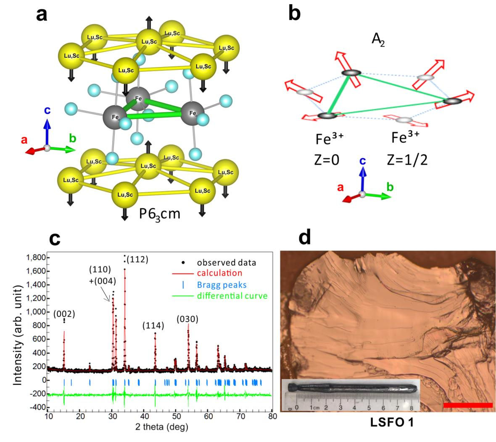
image.15.1[425*379]
Figure 1: The structure of
(b)
16 16
Optical microscope image of a cleaved Lu
0.6
Sc
0.4
FeO
surface (LSFO1). Scale bar is 200
m.
The image of the whole crystal before cleaving is shown in the inset.
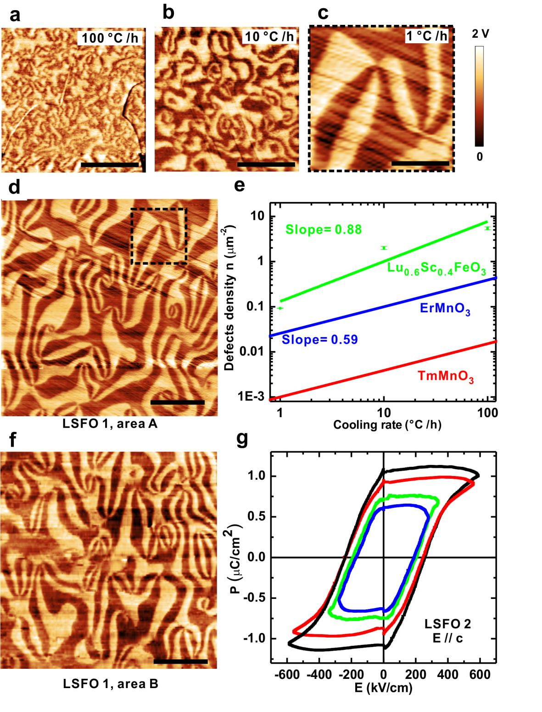
image.16.1[425*557]
17 17
h
-Lu
0.6
Sc
0.4
FeO
.
Room-temperature PFM images of
cleaved surfaces of crystals after
(a)
100 °C/h,
(b)
10 °C/h
and
(c)
1 °C/h cooling in the 1400
C-1200
C temperature range.
(d)
The
large-range PFM
image of the area A of LSFO1 (the black dashed square corresponds to (c)).
(e)
The density of
defects as a function of cooling rates. Error bars of the defect density for 1 °C/h, 10 °C/h, and
100 °C/h cooling are
0.005
μm
,
0.16
μm
, and
0.4
μm
respectively. Data of ErMnO
and TmMnO
is obtained from ref. 25.
(f)
PFM image of another area in LSFO1 (area B).
(g)
Room-temperature P-E loops of LSMO2 at 2702 Hz, which prove its robust and switchable
ferroelectricity. Scale bars are 2
m in (a), (b) and (c), 5
m in (d) and (f).
18 18
h
-Lu
0.6
Sc
0.4
FeO
. (a)
magnetic
susceptibility of LSFO2 in 2 kOe (H
c; open squares, and H//c; red circles) as a function of
temperature.
(b)
Out-of-plane
magnetization (H//c) of LSFO2 as a function of magnetic field
at 130 K (red circles) and 5 K (black triangles), and linear in-plane magnetization (H
c) at 5
K (blue open squares).
(c)
MFM image
and
(d)
corresponding topography of LSFO1 (area C)
at 78 K.
(e)
MFM image
and
(f)
its topography of the same area C at 78 K after a new thermal
cycle.
(g)
Large-range MFM image collage around the area C, which is shown with the black
dashed square. PFM image of LSFO1 (area A) is shown in the black square at the left-lower
corner with the same scale for comparison. Large loop-shape WFM domains are clearly
visible in ~100
m scale. Scale bars are 20
m.
Figure 3: Magnetic properties and magnetic domains of
19 19
h
-Lu
0.6
Sc
0.4
FeO
.
Possible in-plane magnetic
structures of coupled
(a)
and decoupled
(b)
cases between FE and WFM domains. Blue (black)
dashed lines show the FE (WFM) domain walls. Dark circles are
Fe
3+
ions,
and
the red open
arrows illustrate their in-plane spins. Black arrows stand for the structural distortions of top-
apical oxygen ions. Trimerized Fe
3+
ions are labeled with green bonds. The blue (
+
P
, -
M
c
),
yellow (
+
P
, +
M
c
), orange (
-
P
, +
M
c
) and purple (
-
P
, -
M
c
) background colors represent the 4
possible FE and WFM domain combinations.
c
is the ME coefficient along the
c
axis. The
+ domain is chosen to be the same
for clear comparison.
S
pins in dark grey triangle
backgrounds are supposedly identical by unit-cell translations, rotate
|
ΔΦ
| =
/3
for
(a)
and
|
ΔΦ
|
=
/3
for
(b)
across an FE domain wall.
(c)
Cartoon of real FE and WFM domain
distributions drawn by combining Fig. 2d and 3e in the same scale.
(d)
Zoom-in cartoon of
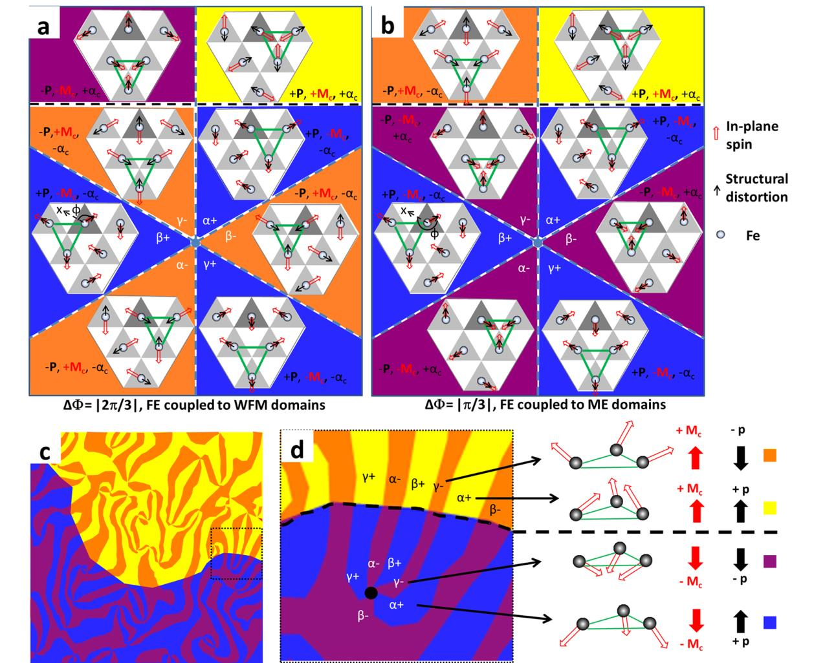
image.19.1[453*369]
Figure 4: Magnetoelectric coupling of
20 20
the black dotted area in
(c)
, and the 3D cartoon of spin configurations for four different
domains. Spins are shown by the red open arrows, and other symbols remain the same as in
and
(b)
,
except that red (black) solid arrows are now the
c
-direction canted magnetic
moments (electric polarizations). The domain decoupled case of
(b)
corresponds to the
experimental result of
(c)
or
(d)
, which demonstrates decoupling between FE and WFM
domains.
(a)
21 21
Kai Du, Bin Gao, Yazhong Wang, Xianghan Xu, Jaewook Kim, Rongwei Hu, Feiting Huang
and Sang-Wook Cheong*
Rutgers Center for Emergent Materials and Department of Physics and Astronomy,
Rutgers University, Piscataway, New Jersey 08854, USA
* To whom the correspondence should be addressed. (E-mail: sangc@physics.rutgers.edu)
h
-LuFeO
and pure
h
-LuFeO
Hexagonal rare-earth ferrites (
h
-RFeO
) are metastable and do not exist under normal
synthesis conditions, unlike the stable hexagonal rare-earth manganites. In order to stabilize
the hexagonal phase experimentally, strain from small-ion doping into A-site for bulk crystals
(e.g.
h
-Lu
0.6
Sc
0.4
FeO
) or from the hexagonal substrate for thin films (e.g.
h
-LuFeO
/YSZ) are
required. Generally, these two approaches apply strain to its original stable lattice and should
give the similar effect in stabilizing the metastable hexagonal phase.
Besides, strong theoretical and experimental evidence has illustrated that Sc-doped
h
-LuFeO
and pure
h
-LuFeO
do share the similar ferroelectric and magnetic properties. Theoretically,
DFT calculations have been conducted to the Sc-doped
h
-LuFeO
in ref. 16 compared to the
pure
h
-LuFeO
. It concludes that the Sc doping will not affect the ferroelectricity and
magnetic properties, other than just helping to stabilize the hexagonal phase. A secondary
effect of the small Sc doping is: Fe-Fe distance becomes closer, and thus their magnetic
interaction becomes stronger, which is consistent with high magnetic transition temperatures
of the Sc-doped
h
-LuFeO
.
Supplementary Information
Title
Vortex Ferroelectric Domains, Large-loop Weak Ferromagnetic
Domains, and Their Decoupling in Hexagonal (Lu, Sc)FeO
Note 1: Difference between Sc-doped
22 22
Experimentally, it is also true that our
h
-Lu
0.6
Sc
0.4
FeO
has a slightly higher weak
ferromagnetic transition temperature at 160 K-170 K, comparing to pure
h
-LuFeO
thin films
(140 K-150 K). Except for that small difference, bulk Sc-doped
h
-LuFeO
shows similar
magnetic properties to pure
h
-LuFeO
thin films, based on the magnetic susceptibility and
neutron diffraction study in ref. 13 and ref. 15.
Therefore,
h
-Lu
0.6
Sc
0.4
FeO
in this work should have the similar properties to theoretically
studied pure
h
-LuFeO
, based on both first principle calculations and the experimental data.
However, as mentioned later in the main text, our bulk
h
-Lu
0.6
Sc
0.4
FeO
single crystals have
much better quality so that it could enable us to further study their intrinsic FE domains and
ME coupling, which is difficult to realize in pure
h
-LuFeO
thin films. Thus, bulk Sc-doped
h
-LuFeO
can be a better platform to explore the intrinsic properties and novel fundamental
physics in the
h
-LuFeO
system.
High-quality
h
-Lu
0.6
Sc
0.4
FeO
single crystals were grown using a floating zone method under
0.8 MPa O
atmosphere. The feed rods were prepared using the standard solid-state reaction
(ref. 14).
The as-grown crystals were annealed at 1400 °C in air for 24 hours to enhance
crystallinity, and then cooled down to 1200 °C with different cooling rates (100 °C/h, 10 °C/h
and 1 °C/h). Afterward, they were cooled to room temperature at the same cooling rate of
100 °C/h. Finally, they were further annealed under 20 MPa O
pressure at 1000 °C in a high-
pressure oxygen furnace to remove any oxygen vacancies and thus enhance resistance. In
similar
h
-RMnO
compounds, it is well known that the topological vortex density can be
symmetrically tuned by different cooling rates near their FE Curie temperatures (ref. 23). As
different densities of vortex FE domains are observed in samples with different rates for the
Note 2: Crystal growth and preparations for measurements
23 23
1200 °C-1400 °C cooling in this work, the FE Curie temperature of
h
-Lu
0.6
Sc
0.4
FeO
is in the
range of 1200 °C-1400 °C.
For all the PFM measurements, AC 5V at 68 kHz was applied to a tip (a commercial
conductive AFM tip) while sample backside is grounded. Before the MFM measurement, a 20
nm gold film was sputtered onto the same cleaved surface of LSFO1 after PFM experiments
to eliminate any electrostatic signal from FE domains during the MFM scanning (ref. 20). All
the MFM images are obtained using a dual pass mode with a lift height of 50 nm.
PE loops were measured on a polished thin sample by the
“
PUND
”
method
provide in the
Ferroelectric Material Test System (RADIANT TECHNOLOGIES INC.). The remanent-only
polarization hysteresis loop is finally derived.
0.5
Sc
0.5
FeO
.
(a) The diffraction pattern of the (1-11) surface. (b) FE
domain image using
the Friedel pair breaking of the ⅓(−123)
superlattice spot (labeled with
green circle). Small disordered and irregular FE domains with highly-curved domain walls are
visualized.
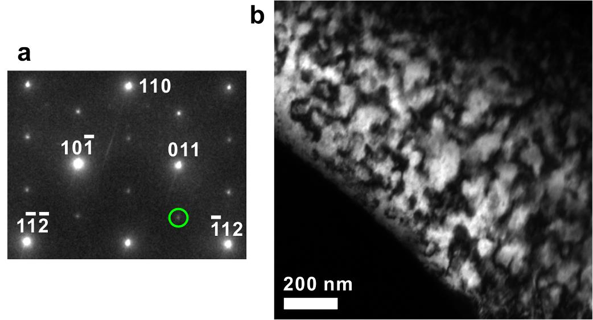
image.23.1[375*202]
Figure S1: Dark field transmission electron microscopy (DF-TEM) image of the fast-
cooled (100 °C/h) Lu
24 24
0.6
Sc
0.4
FeO
due to the self-poling
(a) PFM image of a cleaved surface closed to the surface of the crystal. (b) Cartoon of
the type-II domains on a self-poled sample. Because of the oxygen gradient created near the
sample surface during the annealing process, +P domains are poled to be dominant.
–
P
domains contract and become narrow lines in shape.
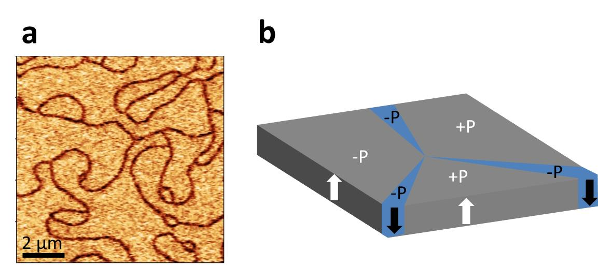
image.24.1[407*182]
Figure S2: Type-II narrow ferroelectric domains of Lu
effect.
25 25
0.6
Sc
0.4
FeO
.
(a) PE loops as a
function of frequency. As there are no clear differences in PE loops with different frequencies,
PE curves are from intrinsic polarizations other than leakage current contributions. (b) The
real part of permittivity and the loss tangent as a function of frequency at the room
temperature. (c) The real part of permittivity and the loss tangent as a function of temperature.
The low loss at the room temperature and its continuous drop at low temperatures indicate the
sample is a good insulator.
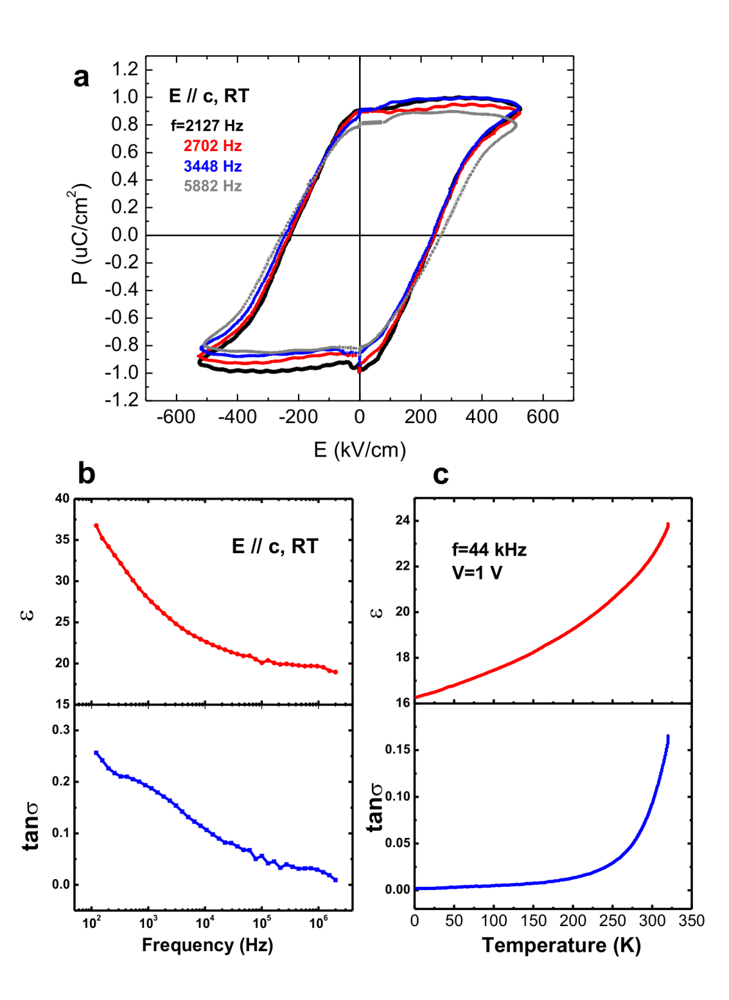
image.25.1[371*508]
Figure S3: Ferroelectric and dielectric properties of Lu
26 26
MFM image and
(b)
the line-profile of the red
dashed line of a hard disk sample. 150 nm-sized domains are well resolved in the MFM image,
which indicates that the spacial resolution of MFM is better than 150 nm.
(c)
MFM image and
the line-profile of the red dashed line of LSFO1 (area C). The same tip and experimental
set-up were used for both experiments, and the domain wall thickness estimated from the
MFM line-profile in
(d)
(the width of the pronounced steep lines) is larger than 2
m.
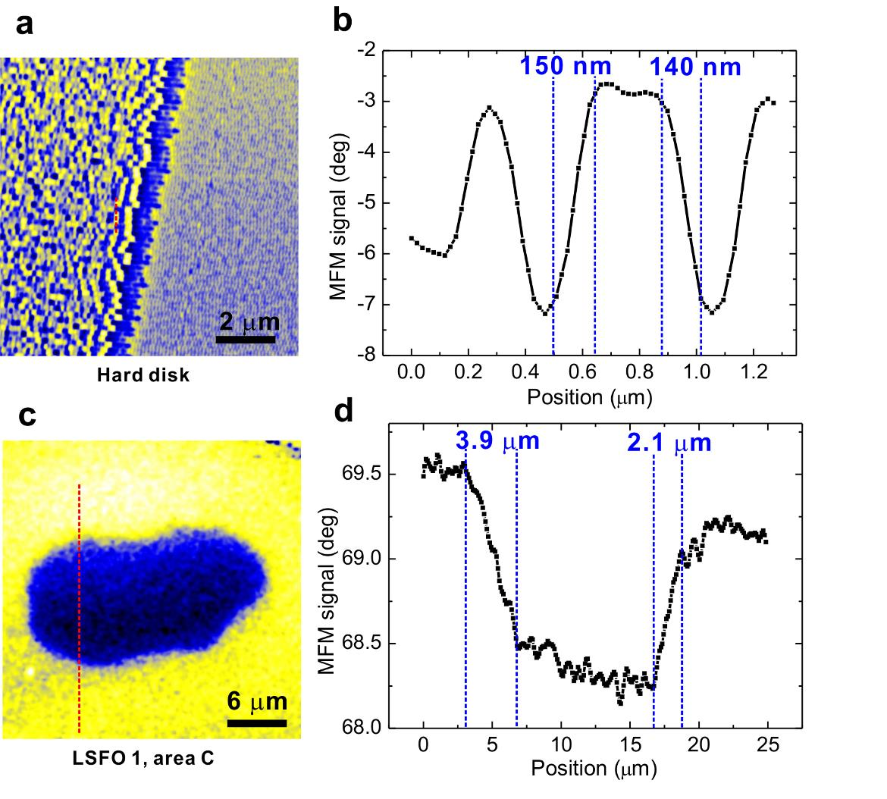
image.26.1[421*379]
Figure S4: WFM domain wall thickness. (a)
(b)
27 27
Topography and
(b)
corresponding
PFM image of LSFO3 (area C) at the room temperature.
(c)
Topography and
(d)
corresponding PFM image of LSFO3 (area C) at 78 K. Identical FE domains are observed.
Tiny differences are due to the possible scanner distortions at different temperatures
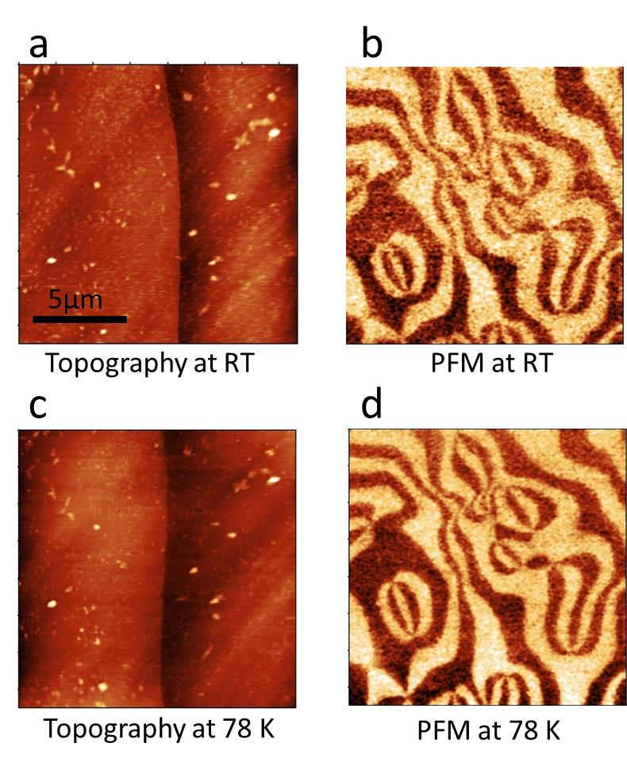
image.27.1[288*351]
Figure S5: FE domains at diferent temperatures (a)
28 28
h
-
0.6
Sc
0.4
FeO
(LSFO3). (a)
Optical microscope image of the cleaved LSFO3. The red scale
bar is 100
m.
(b)
Topography and
(c)
corresponding PFM image of LSFO3 (area A) at the
room temperature.
(d)
Topography and
(e)
corresponding MFM image of LSFO3 (area B) at
78 K. The black scale bar is 10
m. FE and WFM domains form in very different length-
scales.
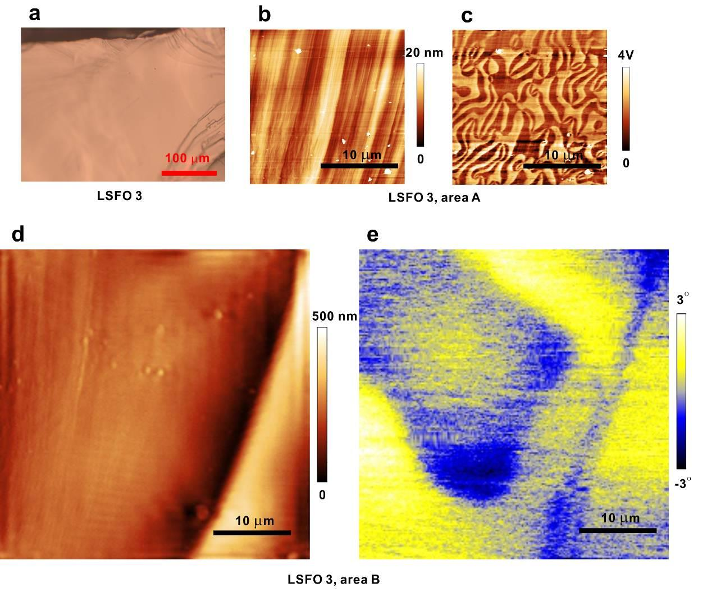
image.28.1[453*379]
Figure S6: Magnetoelectric domain decoupling in another piece of cleaved
Lu
29 29
Magnetic susceptibilities.
(b)
PE loops. Reproducible data
indicates the ferroelectric and magnetic properties are uniform for samples from the same
batch.
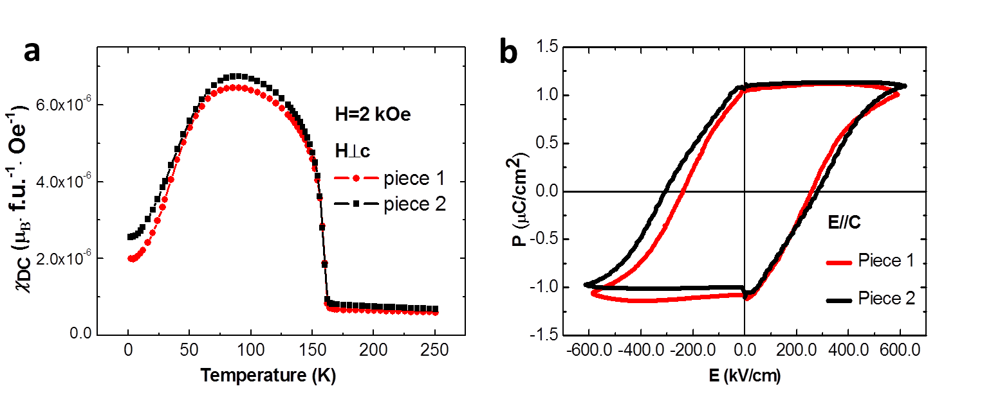
image.29.1[453*198]
Figure S7: Magnetic susceptibilities and PE loops of different crystal pieces cleaved
from the same batch. (a)
30 30
E
H
c.
The measured current
does not respond to the switching of magnetic fields and remains within the noise level. The
sequence of the measurement was in the order of black, red, and green arrows.
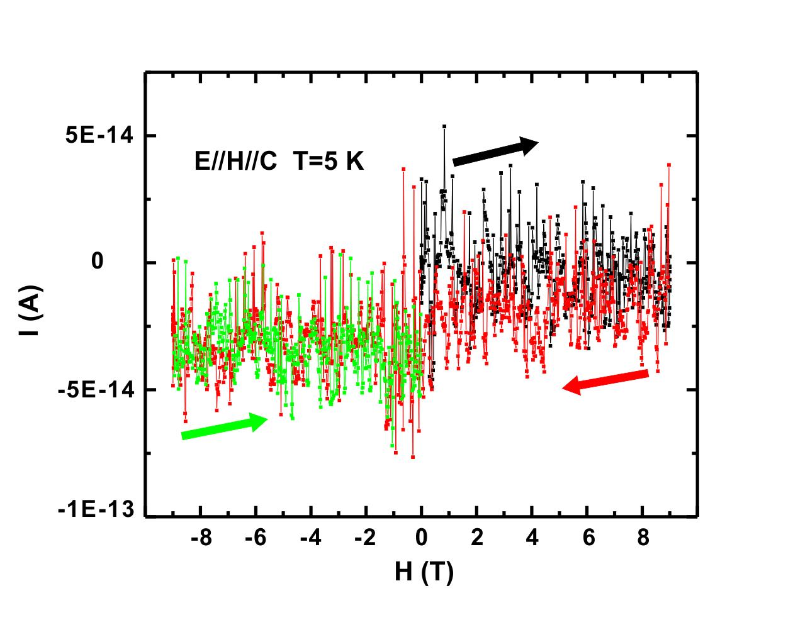
image.30.1[409*313]
Figure S8: Current vs. magnetic fields of LSFO2 at 5 K.
31 31
We could estimate the minimum induced current (I
min
) if a 180° polarization flipping happens
when sweeping the field by having the following experimental parameters: electrode contact
area (S=0.00021 cm
), sweeping speed of magnetic fields (v=0.02 T/s), the saturated
polarization according to PE loops (p=1
μC
/cm
). For the worst case, we assume the
polarization flips during the whole field sweeping process (from 0 T to 9 T) which takes t= 9
T/ (0.02 T/s) = 450 s. Then I
min
= 2P
S/t = 0.9 pA, which is at least 9 times of our current
sensitivity (< 0.1 pA) in the measurement. Therefore, the absence of magnetoelectric current
when sweeping magnetic fields is the strong evidence of the decoupling between WFM and
FE domains.
A topological vortex concept is essential to understand the decoupling between FE and WFM
domains. Here, structural distortions and spins of the identical sites by unit-cell translations
(e.g. sites with darker grey triangle backgrounds in Figure 4a and 4b) need to be considered
and compared. As the structural (e.g. oxygen) distortion directions (defined by the angle
in
around the merging point
becomes
which can define a topological charge (or the winding number n
s
) of
1. The
sign of
(or
1 of the topological charge) depends on the sense of rotation. For example, if
vortices that rotate clockwise are defined to have +1 topological charges, then anti-vortices
that rotate counter-clockwise have
–
1 topological charges. The details of these vortex domains
as topological objects can be also found in ref. 19 and ref. 23.
In addition, antiferromagnetic spins also rotate around a merging point, similar to what
happens with structural distortions. Thus, magnetic domains can also be considered as a
Note 3: Estimation of the sensitivity in current measurement with magnetic fields.
Note 4: Structural topological charge and magnetic topological charge
Figure 4) rotate 60° between two adjacent domains, the total
32 32
topological object and its magnetic topological charge is well defined
. However, two spin
configurations are possible: in one case, spins rotate by 60° between two adjacent domains
(i.e. the magnetic topological charge n
m
of
1 around a merging point, Figure 4b), and spins
rotate by 120° between two adjacent domains in the other case (i.e. the magnetic topological
charge n
m
of
2 around a merging point, Figure 4a). Our MFM results are completely
consistent with the former even though the theory proposed the possibility of both. This
indicates that the magnetic topological charge (n
m
) tends to be identical with the structural
topological charge (n
s
), which leads to the decoupling of FE and WFM domains. Therefore,
we propose it is necessary to consider topological properties when ME coupling is studied in
h
-LuFeO
.
1.
Feng, S. M.
et al.
Determination of the intrinsic ferroelectric polarization in
orthorhombic HoMnO3.
New J. Phys.
, 073006 (2010).
2.
Artyukhin, S., Delaney, K. T., Spaldin, N. A. & Mostovoy, M. Landau theory of
topological defects in multiferroic hexagonal manganites.
Nat. Mater.
13,
–
49 (2014).
References
 image.17.1[425*380]
image.17.1[425*380]